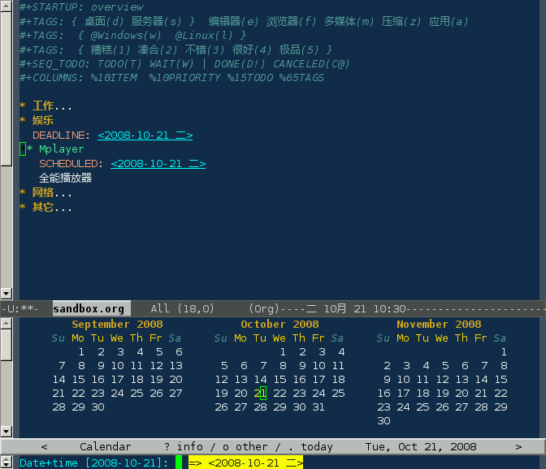
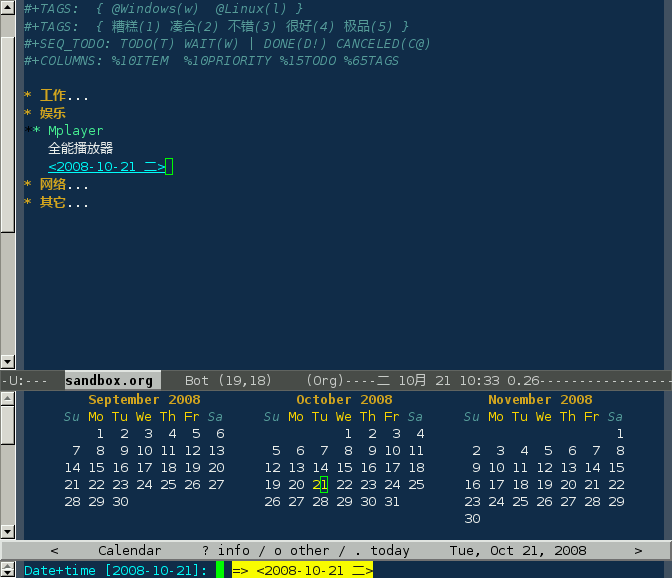
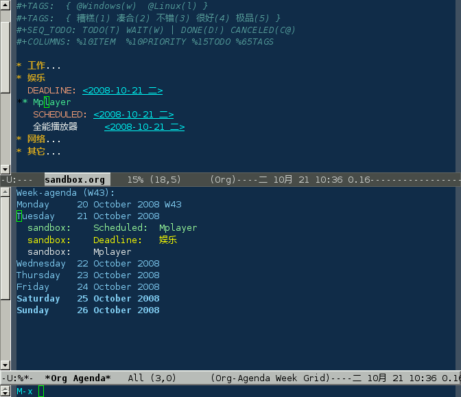

C-c C-d 设定截止日期(DEADLINE)；C-c C-s 设定计划(SCHEDULED)：

C-c .在当前位置插入一个时间戳：

时间标记都会显示在日程表的本周事件中:

| C-c . | 插入时间戳；如果连续插入两个时间戳，则插入一个时间范围 |
| C-u C-c . | 更加精确的时间戳，在日程表中以时间线显示 |
| C-c ! | 插入时间戳，不在日程表中显示 |
| C-c < | 直接插入时间戳（当前日期） |
| C-c > | 查看日历 |
| C-c C-o | 访问当前时间戳的日程表 |
| S-left|S-right | 以天为单位调整时间戳时间 |
| S-up|S-down | 调整光标所在时间单位；如果光标在时间戳之外，调整时间戳类型（是否在日程表中显示） |
| C-c C-y | 计算时间范围长度 |